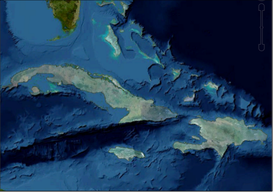

Apply alpha masking to imagery¶
Image masking is a method for making areas of an image transparent. Images are defined as rectangular, but their contents can have irregular shapes. For example, an image that contains the land mass for a country has areas that are outside the country’s borders. These areas are called fill, or no-data regions, and they are usually black or white. When the image is overlaid on a base map, these areas should be transparent, to allow the base map to show through.
An alpha mask is a set of pixels that specifies where to make an image transparent. By default, Google Earth Enterprise Fusion automatically applies a mask when it processes an image but you can also provide custom mask data or prevent masking altogether. The Google Earth Enterprise Fusion Automask tool scans an imagery resource, detects fill data from imagery, and then creates a mask to only show the imagery.
GEE 5.x enables this overlay approach, making it easy to add high resolution imagery insets without the need to include imagery for the entire globe. In addition to use as an overlay, alpha masking can be used to blend imagery layers together.
Prior to GEE 5.x, each imagery layer—built by an imagery project—would comprise an opaque foundation to which all imagery resources would be added. In GEE 4.4 and earlier, the following example of high-resolution imagery inset with a custom mask includes the mask imagery covered with black pixels.
GEE 4.4 and earlier versions applied opaque masks:

As of GEE 5.x, each imagery layer—built by an imagery project—is comprised of a transparent foundation from which all imagery resources are added. The transparent alpha mask enables you to have imagery resources for specific areas, and to view these as overlays or blends on other imagery via Google Earth EC. The following image shows the same high resolution inset, this time with an alpha mask applied, so that it can easily be used as an overlay of a secondary database of worldwide imagery.
GEE 5.x applies alpha masking:

You can apply an alpha mask in different ways when you build an imagery asset:
Use Auto mask to automatically scan an imagery resource, detect fill data from the imagery, and then create a mask to only show the imagery.
Tip
Auto mask works well to mask fill data though it cannot, for example, mask imagery to a coastline since the water would still be considered imagery and not fill. In such cases, create a custom mask.
Create your own custom mask and use Have mask to apply your custom mask.
Learn More